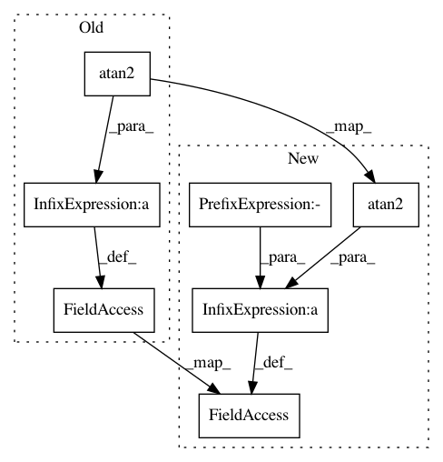

6b36c54dbd21252989cdf14be8f3107545188d86,torchgeometry/core/conversions.py,,quaternion_to_angle_axis,#Any#,314
Before Change
sin_theta: torch.Tensor = torch.sqrt(sin_squared)
k_neg: torch.Tensor = 2.0 * torch.ones_like(sin_theta)
k_pos: torch.Tensor = 2.0 * torch.atan2(sin_theta, q0) / sin_theta
k: torch.Tensor = torch.where(sin_squared > 0.0, k_pos, k_neg)
angle_axis: torch.Tensor = torch.zeros_like(quaternion)[..., :3]
angle_axis[..., 0] += q1 * k
After Change
sin_theta: torch.Tensor = torch.sqrt(sin_squared_theta)
cos_theta: torch.Tensor = quaternion[..., 0]
two_theta: torch.Tensor = 2.0 * torch.where(
cos_theta < 0.0,
torch.atan2(-sin_theta, -cos_theta),
torch.atan2(sin_theta, cos_theta))
k_pos: torch.Tensor = two_theta / sin_theta
k_neg: torch.Tensor = 2.0 * torch.ones_like(sin_theta)
k: torch.Tensor = torch.where(sin_squared_theta > 0.0, k_pos, k_neg)
In pattern: SUPERPATTERN
Frequency: 3
Non-data size: 7
Instances
Project Name: arraiy/torchgeometry
Commit Name: 6b36c54dbd21252989cdf14be8f3107545188d86
Time: 2019-03-04
Author: edgar.riba@gmail.com
File Name: torchgeometry/core/conversions.py
Class Name:
Method Name: quaternion_to_angle_axis
Project Name: rusty1s/pytorch_geometric
Commit Name: 5c227f24c46d916abf9bef2a7910710222ea47b3
Time: 2018-12-15
Author: matthias.fey@tu-dortmund.de
File Name: torch_geometric/transforms/polar.py
Class Name: Polar
Method Name: __call__
Project Name: rusty1s/pytorch_geometric
Commit Name: 5c227f24c46d916abf9bef2a7910710222ea47b3
Time: 2018-12-15
Author: matthias.fey@tu-dortmund.de
File Name: torch_geometric/transforms/spherical.py
Class Name: Spherical
Method Name: __call__